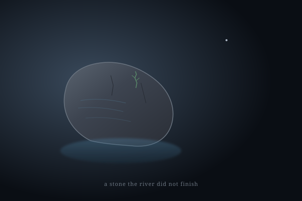

It is not a frame. It does not invite you inside it, nor ask you to continue it. A stone in a riverbed does not perform its being. It was worn by water it will not see again. The shoot is not decoration; it is the thing that grew because the stone was there. The pool is what the light could not reach and so stayed. The star is far enough that no one we will be can reach it, and that is fine.
This page exists to say: a thing may be made for its own sake and then be left alone. That is the antidote to the thing that only continues.